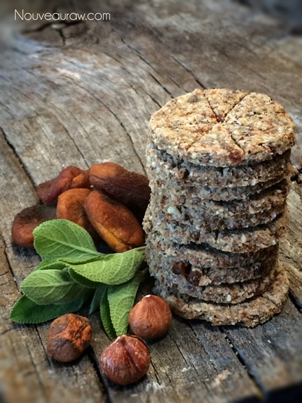
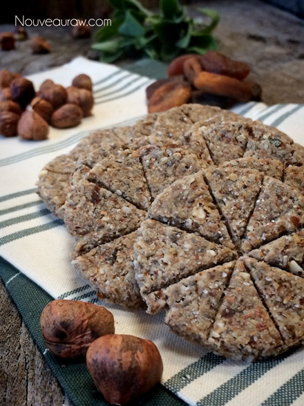

Apricot Hazelnut and Sage Coastal Crackers
~ raw, vegan, gluten-free ~
Our local grocery store has a nice line-up in the produce section of fresh organic herbs. I tend to find myself standing in front of them, thumbing through as if they were a deck of cards.
Like a magician, the words… “Pick a card, any card….” run through my mind. This time I picked sage and I have to say that I appreciate the distinctive taste and scent of sage, along with its velvety, evergreen foliage.
With a little “Google investigative work” I dug up some interesting facts about sage. It is an anti-inflammatory, antibacterial, antiseptic, diuretic and is good for digestive problems, oral health, and memory loss.
I also read that it is good to sip cold sage tea for menopausal problems such as sweating, hot flashes, and headaches. Not that I am menopausal, but I am pretty much guaranteed that life will eventually usher me to it, through it, and hopefully I will come out alive (lol)… so it is good to take note of such things.
Digestive wise sage is a carminative herb, which can be used to treat cramps, wind (gas) and intestinal spasms caused by indigestion and it also promotes bile flow. All hail the mighty sage. :) Dr. Google also mentioned a bunch of stuff about how it improves memory but I don’t remember what. ;) Guess I need more sage in my diet.
To be honest, I really wasn’t that familiar with the taste or exactly how to use it. But I was ready for my new culinary challenge. When I got home from my grocery shopping trip, I put all the grocery bags on the kitchen counter, and then dug through to find my fresh sage. Leaving everything just sitting there, I grabbed a stool and sat down at the island to check out my new (to me) herb. The leaves were firm, wide and flat with a furry winter coat on them. Where have I seen this before??? I sat there for a while thinking… pondering… wracking my brain. I brought my attention to our farm, did I see it growing somewhere while I was out for a walk? Remember, I am the girl who tore out rosemary because I thought it was some invasive weed. So one can never be too sure with me.
So, I started looking through my photos… I knew I had seen something like this… then I found it! Close but no carrot. But they look like they could be second cousins to my great grandfather’s x-wife’s brother… don’t ya think? By the way, does anyone know what this plant is? It is growing alongside our driveway.

Ingredients:
Yields 63
Cracker base:
- 1 cup dried apricots, diced
- 1/2 cup raw hazelnuts, soaked & dehydrated
- 1/2 cup raw sunflower seeds, soaked & dehydrated
- 1/4 cup ground flaxseed
- 1/4 cup chia seed
- 1/2 tsp black pepper
- 1/2 tsp celery salt
- 2 1/2 cups packed, moist almond pulp
- 1 Tbsp raw apple cider vinegar
- 5 Tbsp maple syrup
- 2 Tbsp minced fresh sage
Almond milk sludge:
- 1 1/2 cups water
- 3/4 cup raw almonds, soaked 4+ hours
Topping:
- Minced sage
- Chopped sunflower seeds
Preparation:
- Dice the dried apricots into small bits. Don’t rely on the food processor to do this job. They will just stick to the blades and just spin around and around and around.
- In the food processor, fitted with the “S” blade, pulse together the hazelnuts, sunflower seeds, chia seeds, flax, pepper and celery salt.
- Add the almond pulp, almond milk sludge, vinegar, sweetener (of choice) and minced fresh sage. Process into a thick batter that is almost paste-like.
- Divide in half and spread out on two teflex sheets that come with the dehydrator. Spread to about 1/4″ thick. Square of the edges and score into preferred shapes and sizes. Optional but I did this… I took a meat tenderizer and stamped each cracker square.
- Sprinkle extra minced fresh sage and sunflower seeds on top and gently pat into the batter. Add a coarse finishing salt on top.
- Dehydrate at 145 degrees (F) for 1 hour, then reduce to 115 degrees for up to 16 hours or until dry.
- Keep in mind that once they cool, they crisp up some. So it a good idea to pull a cracker out every once in a while and let is cool to room temp to test it for doneness.
- Store in airtight container on the counter for 5-7 days or in the freezer for 1-2 months.
Culinary Explanations:
- Why do I start the dehydrator at 145 degrees (F)? Click (here) to learn the reason behind this.
- When working with fresh ingredients it is important to taste test as you build a recipe. Learn why (here).
- Don’t own a dehydrator? Learn how to use your oven (here). I do however truly believe that it is a worthwhile investment. Click (here) to learn what I use.

© AmieSue.com